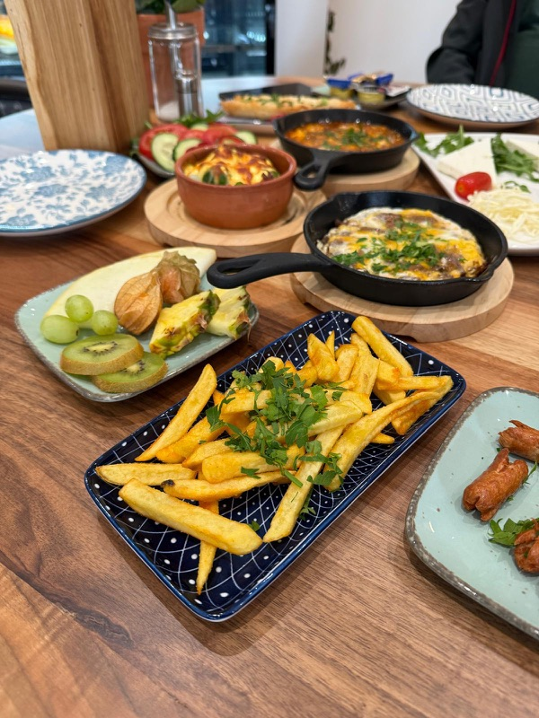
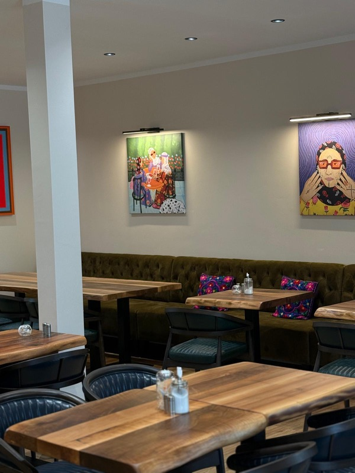
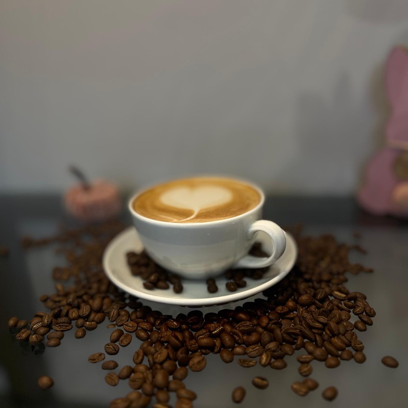

Unsere Geschichte
Frühstückskultur mit Herz in Werther
Taschte steht für einen reich gedeckten Tisch, an dem Menschen zusammenkommen, genießen und sich willkommen fühlen. In unserem Café in Werther verbinden wir türkisch inspirierte Frühstückskultur mit westfälischer Gemütlichkeit: frisch zubereitete Spezialitäten, hausgemachte Kuchen, Bio-Kaffee und ein herzliches Ambiente.
Als Familienbetrieb bereiten wir alles frisch und mit Liebe zu – vom Deluxe Frühstück bis zur täglich wechselnden Kuchenvitrine. Dazu servieren wir Bio-Kaffee von INDIE ROASTERS und türkischen Çay aus dem traditionellen Glas.
- Frisch & hausgemacht – jeden Tag
- Bio-Kaffee von INDIE ROASTERS
- Vegetarische Optionen & Terrasse
- Barrierefrei & familienfreundlich